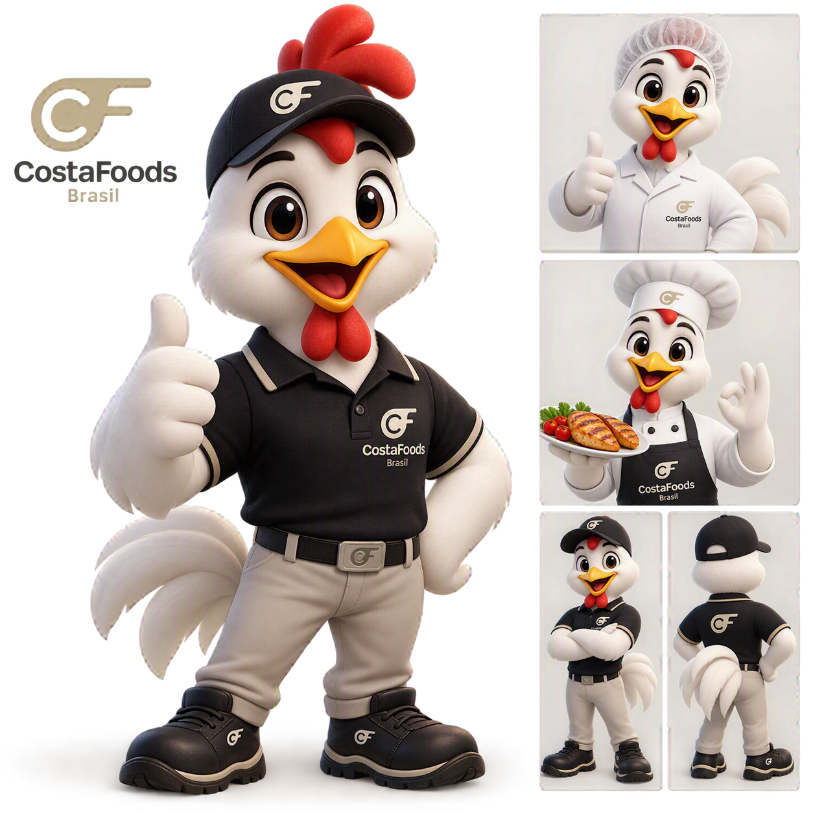

Eu sou o CF!Minha missão é promover a qualidade, a segurança dos alimentos e as Boas Práticas de Fabricação em toda a CostaFoods.
Estou aqui para ajudar você a encontrar treinamentos, POPs, indicadores e responder dúvidas sobre qualidade.